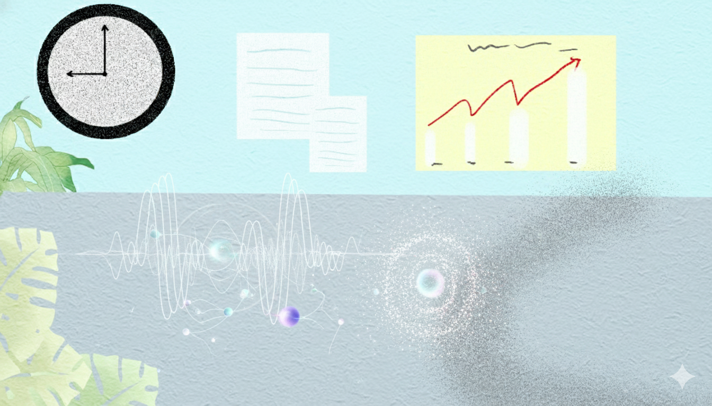
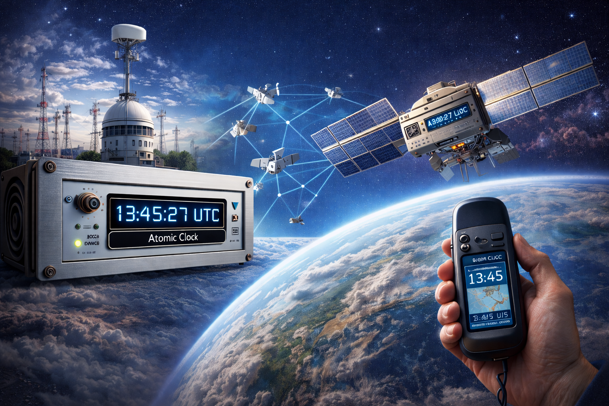

⚛️ Como funcionam os relógios atômicos?
Você sabia que existem relógios tão precisos que podem funcionar por milhões de anos sem atrasar nem um segundo? Pois é! São os incríveis relógios atômicos, e hoje você vai entender como eles conseguem essa façanha.
🔬 1. O que é um relógio atômico?
Diferente dos relógios comuns, que contam o tempo com base em engrenagens ou quartzo, o relógio atômico mede o tempo usando os átomos! Sim, as menores partículas da matéria. O tipo mais usado é o césio-133, porque seus átomos vibram num ritmo extremamente constante.
👉 Cada segundo é definido oficialmente pela vibração do átomo de césio: 9.192.631.770 oscilações!
⚙️ 2. Como ele mede o tempo com tanta precisão?

O funcionamento é baseado na física quântica. Dentro do relógio, os átomos de césio são aquecidos e atravessam um campo de micro-ondas. Quando essas ondas atingem a frequência exata que faz os átomos vibrarem, o relógio “conta” um segundo.
Esse processo é tão estável que a margem de erro é menor que um segundo em milhões de anos! 😱
🌍 3. Onde eles são usados?

Relógios atômicos estão em estações de tempo e dentro dos satélites do sistema GPS. Sem eles, os sinais de localização não seriam precisos, e os mapas do seu celular poderiam errar quilômetros! Eles também são essenciais para telecomunicações, pesquisas científicas e redes financeiras globais.
🚀 Curiosidade Extra:
O relógio atômico mais preciso do mundo foi criado em 2022 e usou átomos de estrôncio. Ele é tão exato que só atrasaria um segundo a cada 15 bilhões de anos!
🎉 Conclusão:
Os relógios atômicos são a base de toda a medição moderna do tempo. Graças a eles, nossos GPS, redes de internet e até satélites funcionam em perfeita sincronia. É a ciência mostrando que medir o tempo pode ser uma arte de precisão!